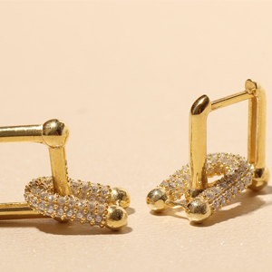

Takılar, her kadının tarzını tamamlayan ve kendini ifade etmesine yardımcı olan en önemli aksesuarlarından biridir. Ancak çoğu zaman, doğru parçaları seçmek ya da bir arada tutmak zor olabilir. Bu nedenle, şıklığınızı her zaman tamamlama garantisi sunan bir takı kutusuna sahip olmak çok önemlidir. Peki, her takı kutusunda mutlaka bulunması gereken parçalar nelerdir? Gelin, bu sorunun cevabına birlikte bakalım.
